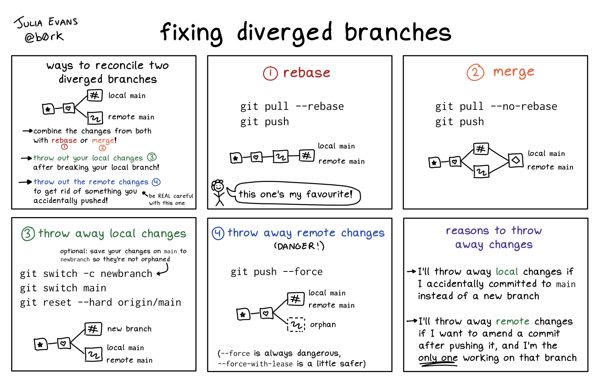

25 General
25.1 Misc
View HTML file in browser
- Syntax: https://raw.githack.com/<acct name>/<repo name>/<branch name>/<directory name>/<file name>.html
Installing from a git repo (From link)
- Make a fork of the repo and then clone it to your local machine.
- To update, after setting an upstream remote (
git remote add upstream git://github.com/benfulcher/hctsa.git) you can usegit pull upstream main. - To update the submodule in the repo,
git submodule update --init
Start R project and Git repo in whichever order (I think)
Create R project in RStudio
- Choose New Directory for all the templated projects (e.g. quarto book, shiny, etc.). None of the other choices have them.
- If youve already created a directory, it will NOT overwrite this directory or add to it. So youll either have alter the name of your old directory or choose a new name.
- Choose New Directory for all the templated projects (e.g. quarto book, shiny, etc.). None of the other choices have them.
Create repo on Github
- Add license and readme
Do work
Tools >> Version Control >> Project Set-up >> Version Control System >> Select Git
Open terminal and go to working directory of project
git checkout -B main git pull origin main --allow-unrelated-histories git add . git commit -m "initial commit" git push --set-upstream origin main
Turn off LF will be replaced by CRLF the next time Git touches it
- Message spams terminal when committing changes from a window machines. Has to do with line endings in windows vs unix.
- Turn off:
git config core.autocrlf true - See SO post for more details
URL format to download files from repositories
- https://raw.githubusercontent.com/user/repository/branch/filename
# Or evidently this way works too # adds ?raw=true to the end of the url feat_all_url <- url("https://github.com/notast/hierarchical-forecasting/blob/main/3feat_all.RData?raw=true") load(feat_all_url) close(feat_all_url)Get filelist from repo and download to a directory
- ** Directory urls change as commits are made **
library(httr) # example: get url for the data dir of covidcast repo req <- httr::GET("https://api.github.com/repos/ercbk/Indiana-COVIDcast-Dashboard/git/trees/master?recursive=1") %>% httr::content() # alphabetical order trees <- req$tree %>% map(., ~pluck(.x, 1)) %>% as.character() # returns 20 which is first instance, so 19 should the "data" folder detect_index(trees, ~str_detect(., "data/")) # url for data dir req$tree[[19]]$url # example # Get all the file paths from a repo req <- GET("https://api.github.com/repos/etiennebacher/tidytuesday/git/trees/master?recursive=1") # any request errors get printed stop_for_status(req) file_paths <- unlist(lapply(content(req)$tree, "[", "path"), use.names = F) # file_path wanted <- filter file path to file you want # gets the very last part of the path file_wanted <- basename(file_path_wanted) origin <- paste0("https://raw.githubusercontent.com/etiennebacher/tidytuesday/master/", file_wanted) destination <- "output-path-with-filename-ext" # if file doesn't already exist, download it from repo into destination if (!file.exists(destination)) { # if root dir doesn't exist create it if (!file.exists("_gallery/img")) { dir.create("_gallery/img") } download.file(origin, destination)
{kind=link}
25.2 Config Options
Notes from: Popular git config options - More options listed that are not presented here.
Setting Options
- Add via CLI:
git config --global <name> <value>- Example:
git config --global diff.algorithm histogram
- Example:
- Delete by going into
~/.gitconfigand delete the parameter and value
- Add via CLI:
merge.conflictstyle diff3 - Provides extra information on merge conflicts
<<<<<<< HEAD def parse(input): return input.split("\n") ||||||| b9447fc def parse(input): return input.split("\n\n") ======= def parse(text): return text.split("\n\n") >>>>>>> somebranch- Below <<<<<< HEAD: This is your local code that youre trying to push
- Between |||||||| b9447fc and =======: This is the original version of the code
- Above <<<<<< somebranch: This is code from the branch that got merged before yours (I think)
- Therefore, the correct merge conflict resolution is
return text.split("\n"), since that combines the changes from both sides.
merge.conflictstyle zdiff3 - A newer version of merge.conflictstyle diff3
A B C D E <<<<<<< ours F G ||||||| base # Add More Letters ======= X Y Z >>>>>>> theirs- Above <<<<<< ours: This is the original code plus the code that belongs to the branch that got merged that is not in conflict with your code
- Below <<<<<< ours: This is the code that is in conflict with the branch (e.g. main) your merging into.
- Below |||||||| base: This is the code that has been removed from the original code for both mergers
- Above <<<<<< theirs: This is code for another branch that was merged before yours that is in conflict with your code.
push.default current - Says that when using
git pushto always push the local branch to a remote branch with the same name.- push.default simple is the default in Git. Means
git pushonly works if your branch is already tracking a remote branch. - I guess its possible to push a local branch to a remote branch of a different name.
- push.default simple is the default in Git. Means
init.defaultBranch main - Create a main branch instead of a master branch when creating a new repo. I normally do this on Github.
commit.verbose true - This adds the whole commit diff in the text editor where youre writing your commit message, to help you remember what you were doing.
rerere.enabled true - This enables rerere (reuse recovered resolution), which remembers how you resolved merge conflicts during a git rebase and automatically resolves conflicts for you when it can.
core.pager delta - The pager is what git uses to display the output of git diff, git log, git show, etc.
- Values:
- delta: A fancy diff viewing tool with syntax highlighting
- less -x5,9 - Sets tabstops, which I guess helps if you have a lot of files with tabs in them?
- less -F -X - Not sure about this one, -F seems to disable the pager if everything fits on one screen if but her git seems to do that already anyway
- cat - To disable paging altogether
- Delta also suggests that you set up interactive.diffFilter delta color-only to syntax highlight code when you run
git add -p.
- Values:
diff.algorithm histogram - Improves the Patience algorithm for presenting diffs. See link in article for more details.
Default (I think the default algorithm is Myers.)
-.header { +.footer { margin: 0; } -.footer { +.header { margin: 0; + color: green; }- footer didnt actually have margin: 0 and color: green in the original code like this diff makes it seem. In reality, the two rules have switched order with header gaining the additional property, color: green.
Histogram
-.header { - margin: 0; -} - .footer { margin: 0; } +.header { + margin: 0; + color: green; +}- This shows headers old rule without color: green at the top and being removed. footer is accurately depicted as unchanged. Then, it shows header with the addtional property, color: green, added below footer.
includeIf - Allows you to use different options depending which directory your project is in.
Example: Use this config file only if youre in the work directory
[includeIf "gitdir:~/code/<work>/"] path = "~/code/<work>/.gitconfig"- Good if, for example, you want to have a work email set for work repos and personal email for set for personal repos
insteadOf - Useful to correct little mistakes often you make
See article for other usecases
Example: If you accidently clone using http when you want to use SSH
[url "git@github.com:"] insteadOf = "https://github.com/"- Now when you accidently clone a repo using the http address, itll change it to the ssh address in
.git/config. Now youll be using ssh to push changes which is more secure.
- Now when you accidently clone a repo using the http address, itll change it to the ssh address in
Submodules
status.submoduleSummary true diff.submodule log submodule.recurse true- See thread for details
- The top two make
git statusandgit diffdisplay some more useful information on how things differ in submodules. - The bottom one aids in the updating of submodules when switching branches
diff.colorMoved default - Uses different colours to highlight lines in diffs that have been moved
- diff.colorMovedWS allow-indentation-change - With diff.colorMoved set, also ignores indentation changes
gpg.format ssh - Allows you to sign commits with SSH keys
merge.tool meld (or nvim, or nvimdiff) - Enables use
git mergetoolto help resolve merge conflicts
25.3 Optimizations
- For large repos, simple actions, like running git status or adding new commits can take many seconds. Cloning repos can take many hours.
- Benefits
- It improves the overall performance of your development workflow, allowing you to work more efficiently. This is especially important when working with large organizations and open source projects, where multiple developers are constantly committing changes to the same repository. A faster repository means less time waiting for Git commands such as
git cloneorgit pushto finish. It helps to optimize the storage space, as large files are replaced by pointers which take up less space. This can help avoid storage issues, especially when working with remote servers.
- It improves the overall performance of your development workflow, allowing you to work more efficiently. This is especially important when working with large organizations and open source projects, where multiple developers are constantly committing changes to the same repository. A faster repository means less time waiting for Git commands such as
- Misc
See How to Improve Performance in Git: The Complete Guide
- Explainer, config settings, advanced gc, checkout, and clone commands
- Use .gitignore
- Generated files, like cache or build files
- They will be modified at each different generation and theres no need to keep track of those changes.
- Third-party libraries
- Instead, aim for a list of the required dependencies (and the correct version) so that everyone can download and install them whenever the repo is cloned.
- For example, with a package.json file for JavaScript projects you can (and should) exclude the /node_modules folder.
- .DS_Store files (which are automatically created by macOS) are another good candidate
- Instead, aim for a list of the required dependencies (and the correct version) so that everyone can download and install them whenever the repo is cloned.
- Generated files, like cache or build files
- Git LFS
Designed specifically to handle large file versioning. LFS saves your local repositories from becoming unnecessarily big, preventing you from downloading unnessary data.
- Git LFS intercepts any large files and sends them to a separate server, leaving a smaller pointer file in the repository that links to the actual asset on the Git LFS server.
This is an extension to the standard Git feature set, so you will need to make sure that your code hosting provider supports it (all the popular ones do).
Also need to download and install the CLI extension on your machine before installing it in your repository.
Set-Up
$ git lfs install $ git lfs track "*.wav" $ git lfs track "images/*.psd" $ git lfs track "videos" $ git add .gitattributes- Tells Git LFS which file extensions it should manage.
.gitattributesnotes the file names and patterns in this text file and, just like any other change, it should be staged and committed to the repository.- Can now add files and commit as normal
- List all file extensions being tracked:
git lfs track - List all files being managed:
git lfs ls-files
- Dont download the version history if you dont need to
git clone depth 1 gitj@github.com:name/repo.git
25.4 Troubleshooting
- Diverged Branches
 - Keeps asking for username/password when pushing
- Solution: You (or if you used usethis::use_github/git) probably set-up a https connection when you need a ssh connection.
- see https://docs.github.com/en/get-started/getting-started-with-git/managing-remote-repositories#changing-a-remote-repositorys-url to change from https to ssh.
- Solution: You (or if you used usethis::use_github/git) probably set-up a https connection when you need a ssh connection.
- Undo a commit, but save changes made (e.g. you forgot to pull before you pushed)
- Steps
git log- Shows commit history. Copy the hash for your last commitgit diff <last commit hash> > patch- save the diff of the latest commit to a filegit reset --hard HEAD^to revert to the previous commit- **After this, your changes will be lost locally **
git log- confirm that you are now at the previous commitgit pull- correct the mistake you made in first placepatch -p1 < patch- apply the changes you originally madegit diff- to confirm that the changes have been reapplied- Now, you do the regular commit, push routine
- Steps
- Undo uncommitted changes:
git stashfollowed bygit stash drop- but only use if you commit often - guessing this is not good if your commit is somehow large and/or involves multiple files
- Search commits by string:
git log --grep <string>
{kind=link}
{kind=link}
25.5 Pulling
Save your changes, pull in an update, apply your changes
git stash git pull git stash popgit stash popthrows away the (topmost, by default) stash after applying it, whereasgit stash applyleaves it in the stash list for possible later reuse (or you can thengit stash dropit).
Re potential merge conflicts
- For instance, say your stashed changes conflict with other changes that youve made since you first created the stash. Both pop and apply will helpfully trigger merge conflict resolution mode, allowing you to nicely resolve such conflicts and neither will get rid of the stash, even though perhaps youre expecting pop too. Since a lot of people expect stashes to just be a simple stack, this often leads to them popping the same stash accidentally later because they thought it was gone.
Pulling is fetching + merging

Fetching just gets the info about the commits made to the remote repo
git fetch originSome technical discussion for always using git pull ff
- https://blog.sffc.xyz/post/185195398930/why-you-should-use-git-pull-ff-only-git-is-a
- https://megakemp.com/2019/03/20/the-case-for-pull-rebase/
- its still confusing but pull rebase sounds fine to me
- global tag says do it for all my repos
- not sure what the true and only are for
- git pull help will open doc in browser
Pulling by rebase
Local: using this method as default
git config pull.rebase true git pullRemote
git pull --rebase
Pulling by fast-forward
Local: using this method as default
git config --global pull.ff only git pullRemote
git pull --ff
25.6 Branching
Misc
Create a branch (e.g. testing)
git branch testingWork in a branch
git checkout testingThe files in your working directory change to the version saved in that branch
It adds, removes, and modifies files automatically to make sure your working copy is what the branch looked like on your last commit to it.
Create and work in a branch
# new way git switch -c testing or git checkout -b testing or git branch testing git checkout testingcreates the branch and switches you to working in that branch
If you did a bunch of changes in a codebase, only to realize that youre working on `master`,
switchwill bring those local changes with you to the new branch. So I guess they wont affect master then.- Unless If you already committed to main, then those changes are both in your new branch and in main. So you would still have to clean up the main branch.
Deleting a branch
local branch
git branch -d testing
remote branch
git push <remoteName> --delete <branchName>See existing branches
git branchSee what has been commited the remote repo branches
git fetch origin git branch -vvorigin is the name of the remote
result
testing 7e424c3 [origin/testing: ahead 2, behind 1] change abc master 1ae2a45 [origin/master] Deploy index fix * issue f8674d9 [origin/issue: behind 1] should do it cart 5ea463a Try something newformat: branch, last commit sha-1, local branch status vs remote branch status, commit message
the star indicates the HEAD pointers location (where youre at, i.e. checkout)
testing branch
- ahead 2 means I committed twice to the local testing branch and this work has not been pushed to the remote testing branch repo yet.
- behind 1 means someone has pushed a commit to the remote testing branch repo and we havent merged this work to our local testing branch
Get the last 10 branches that youve committed to locally:
git branch --sort=-committerdate | head -n 10Rename branch
# change locally git branch --move <bad-branch-name> <corrected-branch-name> # change remotely in repo git push --set-upstream origin <corrected-branch-name> # confirm change git branch --allHEAD determines to which branch new commits are added
- Example
- testing branch is created (not shown in above picture)
- HEAD points at master branch
- master branch and the new testing branch both point at commit, f30ab.
- f30ab commit points to previous commit 34ac2
- user executes
checkoutto testing branch (not shown in picture)- HEAD now points to testing branch
- user commits 87ab2 (shown in pic)
- 87ab2 is committed to the testing branch
- testing branch is now ahead of the master branch by 1 commit
- testing branch is created (not shown in above picture)
- Example
- Everything above happens but now another user commits the master branch.

- Both branches are in conflict. The testing branch is ahead and behind by 1 commit
- Everything above happens but now another user commits the master branch.
- Example
Merging

- Notes
- NEVER merge your branch locally on your machine with the master branch, ALWAYS merge online via pull request
- Steps
- Push final changes and use of a pull request
- Switch to master branch locally and pull the merged changes
- Steps
- NEVER merge your branch locally on your machine with the master branch, ALWAYS merge online via pull request
- Update branch with work thats been done in master branch
After updating your local branch, push to remote repo (no commit necessary)
# while in branch git merge master
- Notes
Fast-Forward
Example
- Before the merge
- the testing branch is 1 commit ahead of the master branch and the master branch doesnt have a new commit
- After the merge

- master is moved forward to the testing branch commit
- Before the merge
Code (merging work in branch with the master branch for production)
# currently in test branch git checkout master git merge testing
Lines in file are marked
# <<<<<<< HEAD:index.html # <div id="footer">contact : email.support@github.com</div> # ======= # <div id="footer"> # please contact us at support@github.com # </div> # >>>>>>> iss53:index.htmlAbove ======= is the master branch version of the code and below is the iss53 branch version
Make necessary changes and save the file
git add . or git add <resolved file>
- Tells git that conflict is resolved
Check status to confirm everything has been resolved
git status On branch master All conflicts fixed but you are still merging. (use "git commit" to conclude merge) Changes to be committed: modified: index.htmlgit commit
- no message required (theres a default message) but you can add one if you want
Example
iss53 branch ahead of master by 2 commits (c3, c5) and behind 1 commit (c2)

Same code as Fast-Forward merge but git handles the merge a bit differently
git checkout master git merge iss53


- C6 (right pic) is called a merge commit. Its created by git and points to two commits instead of one.
- No need to merge with master (i.e. update local iss53 branch with c4 changes in master) before committing final changes
- If there are changes in the same lines of code C4 and C5, then there will be a conflict (See below, Conflicts >> Example)
Conflicts
- Example
- Changed files in C4 (see above example) are in the same lines of the same files that you made changes to in C5
- Remember: youre now in the master branch since you did checkout master as part of the merge code
- Steps
Check status to which files are causing the conflict (e.g. index.html)
git status Unmerged paths: (use "git add <file>..." to mark resolution) both modified: index.html
- Changed files in C4 (see above example) are in the same lines of the same files that you made changes to in C5
- Example
Moving between branches
from master to testing
git checkout testing
local files are deleted and replaced with branch versions
- alternative: worktree
Example
What happens when you move from branch-a to branch-b
BRANCH-A BRANCH-B alpha.txt alpha.txt bravo.txt charlie.txt charlie.txt delta.txt
bravo text is deleted from your local disc and delta.txt is added
If any changes to alpha.txt or charlie.txt have been made and no commit has been made, the checkout will be aborted
- So either revert the changes or commit the changes
Untracked files or newly created files
- If you have branch-A checked out and you create a new file called echo.txt, Git will not touch this file when you checkout branch-B. This way, you can decide that you want to commit echo.txt against branch-B without having to go through the hassle of (1) move the file outside the repo, (2) checkout the correct branch, and (3) move the file back into the repo.
{kind=link}
{kind=link}
25.7 Collaboration
- Add collaborators to your repository
- One person invites the others and provides them with read/write access (github docs)
- Steps
- Go to the settings for your repository
- manage access >> invite a collaborator
- Search for each collaborator by full name, acct name, or email
- Click Add <name> to <repo>
- Each collaborator will need to accept the invitation
- Sent by email
- Steps